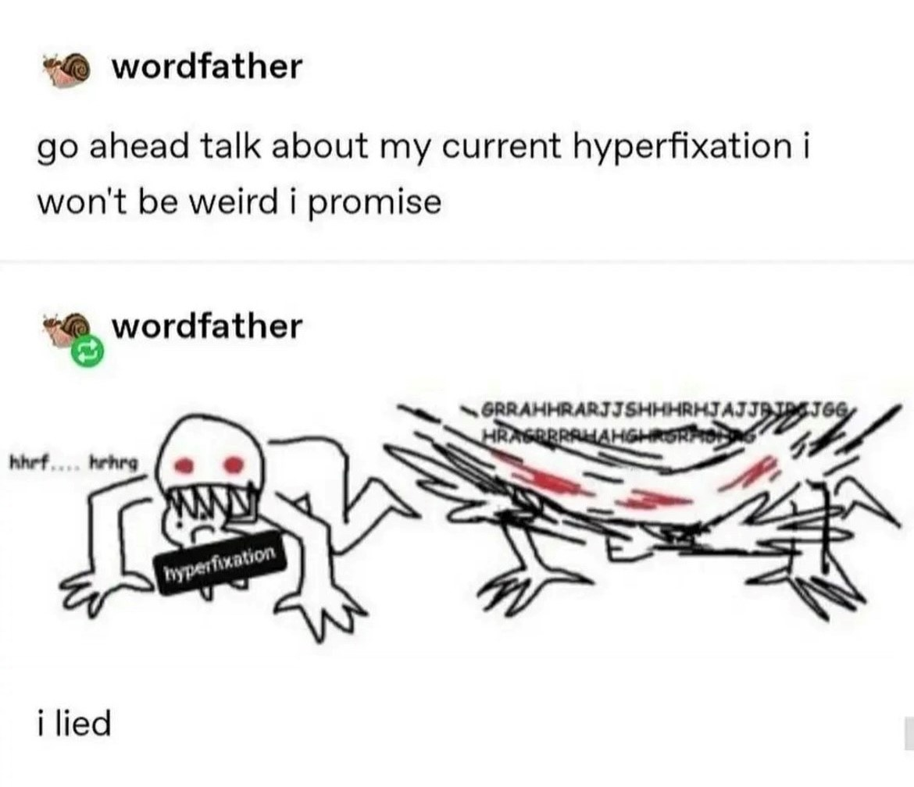

thx for ruining my life i love u
have you ever fixated on something so hard you never thought about anything else? i have, for my entire life. i thought i would grow out of having phases but i'm still here and i still can't think about anything else. head empty only brainrot
yes i measure my life by fixations they were/are the only thing in my life it's a problem haha
the page is called this because i think they genuinely have negatively impacted my life socially and mentally but at the same time have brought me so much joy and the best moments of my life. it's not great but i can't stop it so might as well enjoy it
